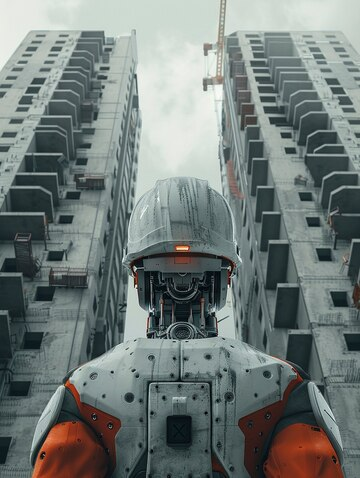

The construction industry, traditionally a labor-intensive and slow-moving sector, is undergoing a significant transformation. The integration of artificial intelligence (AI) and robotics is emerging as a powerful force, promising to revolutionize construction processes. By automating tasks, improving precision, and enhancing safety, AI-assisted robotics is poised to reshape the future of building and infrastructure development.
One of the primary benefits of AI-assisted robotics is the potential to significantly increase efficiency and productivity. By automating repetitive and time-consuming tasks, such as bricklaying, concrete pouring, and drywall installation, robots can accelerate construction timelines and reduce labor costs. Moreover, AI-powered systems can optimize construction processes, identify potential issues, and make data-driven decisions, leading to higher-quality outcomes.
Construction is one of the most dangerous industries, with a high rate of accidents and injuries. AI-assisted robotics can significantly enhance safety on construction sites. By eliminating the need for workers to perform hazardous tasks, such as working at heights or in confined spaces, these technologies can reduce the risk of accidents and fatalities. Furthermore, AI-powered systems can monitor worker behavior, identify potential hazards, and implement safety protocols, creating a safer working environment for all.
[ref]AI-powered robots can perform tasks with greater precision and accuracy than human workers. This can lead to improved quality control and reduced rework, ultimately resulting in higher-quality construction projects. For example, robotic arms can precisely lay bricks, ensuring consistent spacing and alignment, while autonomous vehicles can transport materials with minimal risk of accidents or damage.
While the initial investment in AI-assisted robotics may be significant, these technologies can lead to long-term cost savings. By automating tasks, reducing labor costs, and minimizing waste, construction companies can achieve significant cost reductions. Additionally, AI-powered systems can optimize resource allocation and material usage, further contributing to cost savings.
AI-assisted robotics can contribute to more sustainable construction practices. By reducing waste, minimizing energy consumption, and optimizing material usage, these technologies can help reduce the environmental impact of construction projects. Furthermore, AI-powered systems can be used to monitor and control energy usage in buildings, leading to improved energy efficiency and reduced carbon emissions.
The future of AI-assisted robotics in construction is promising, with ongoing advancements in technology driving innovation. As AI and robotics continue to evolve, we can expect to see even more sophisticated and versatile systems. However, challenges such as high initial costs, technical complexities, and labor displacement need to be addressed to fully realize the potential of these technologies.
In conclusion, AI-assisted robotics is poised to revolutionize the construction industry, offering numerous benefits, including increased efficiency, improved safety, enhanced quality, cost reduction, and sustainability. By embracing these technologies, the construction industry can become more productive, efficient, and sustainable. [ref]